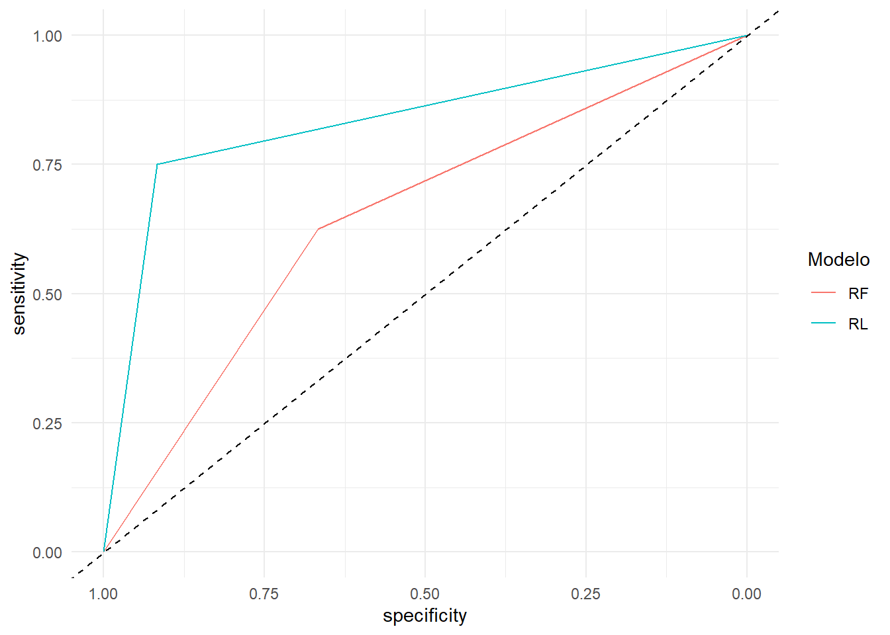

# install.packages('caret')
# install.packages('MLmetrics')
library(caret)
library(MLmetrics)
datos <- read.table("datos/datos_climaticos_p90_s10_GRSV_.csv",
sep = ',',
header = T)
datos$Prevalencia <- factor(datos$Prevalencia,
labels = c('N','P'))
set.seed(123)
entrenar <- createDataPartition(datos$Prevalencia,
p = 0.8, ####
list = F)
set_entrenamiento <- datos[entrenar,]
set_test <- datos[-entrenar,]Ajuste de modelo predictivo
Vamos hacer dos modelos, un random forest y una regresión logística, para ello vamos a usar las variables que fueron seleccionadas por el método BORUTA:
Viento_M3
Punto.rocio_M3
Precipitacion_S3
Primero vamos a particionar la base de datos en set de entrenamiento y set de testeo para controlar la capacidad de clasificación de nuestros modelos.
El set de entrenamiento tiene 85 observaciones y el set de testeo tiene 20 observaciones.
proporciones <- data.frame("Set" = c("Entrenamiento","Validacion"),
"Positivos" = c(sum(set_entrenamiento$Prevalencia == "P")/nrow(set_entrenamiento),
sum(set_test$Prevalencia == "P")/nrow(set_test)),
"Negativos" = c(sum(set_entrenamiento$Prevalencia == "N")/nrow(set_entrenamiento),
sum(set_test$Prevalencia == "N")/nrow(set_test)))
knitr::kable(proporciones) | Set | Positivos | Negativos |
|---|---|---|
| Entrenamiento | 0.3882353 | 0.6117647 |
| Validacion | 0.4000000 | 0.6000000 |
Definimos el control del entrenamiento para los modelos:
control_entrenamiento <- trainControl(method = "repeatedcv",
number=5,
repeats = 3,
returnResamp = "final",
summaryFunction = multiClassSummary,
allowParallel = TRUE,
classProbs = TRUE,
p = .8)Random Forest
Utilizaremos la función train que permite seleccionar la métrica que queremos maximizar (o minimizar). En este maximizaremos la métrica AUC, ya que la usaremos para evaluar el rendimiento de nuestros clasificadores.
set.seed(123)
rfgrid <- expand.grid(mtry = 2)
rf <- train(Prevalencia ~Viento_M3+Punto.rocio_M3+Precipitacion_S3,
data=set_entrenamiento,
method="rf",
metric = "AUC",
tuneGrid = rfgrid,
trControl = control_entrenamiento)
#mean(rf$resample$AUC)
#mean(rf$resample$Accuracy)
#mean(rf$resample$Kappa)El área media bajo la curva ROC de este modelo fue: 0.5781385
La precisión media de este modelo fue: 0.5819989
El índice Kappa medio de este modelo fue: 0.1126048
Podemos comparar la precisión media del modelo en el set de entrenamiento y en el set de testeo.
Testeo <- MLmetrics::Accuracy(predict(rf,set_test),set_test$Prevalencia)
SensRF <- MLmetrics::Sensitivity(set_test$Prevalencia,predict(rf,set_test), positive = "P")
EspRF <- MLmetrics::Specificity(set_test$Prevalencia,predict(rf,set_test), positive = "P")
AUCRF <- pROC::auc(as.numeric(set_test$Prevalencia),as.numeric(predict(rf,set_test)))
#round(mean(rf$resample$Accuracy),2)
# TesteoLa precisión media del set de entrenamiento fue: 0.58, y la precisión en el set de testeo fue: 0.65
Regresión Logística
set.seed(123)
rlg <- train(Prevalencia ~Viento_M3+Punto.rocio_M3+Precipitacion_S3,
data=set_entrenamiento,
method="glm",
family = "binomial",
metric = "AUC",
trControl = control_entrenamiento)
#mean(rlg$resample$AUC)
#mean(rlg$resample$Accuracy)
#mean(rlg$resample$Kappa)El área media bajo la curva ROC de este modelo fue: 0.6031746.
La precisión media de este modelo fue: 0.6601307.
El índice Kappa medio de este modelo fue: 0.2003776.
De nuevo comparamos la precisión media del modelo en el set de entrenamiento y en el set de testeo.
TesteoRL <- MLmetrics::Accuracy(predict(rlg,set_test),set_test$Prevalencia)
SensRL <- MLmetrics::Sensitivity(set_test$Prevalencia,predict(rlg,set_test), positive = "P")
EspRL <- MLmetrics::Specificity(set_test$Prevalencia,predict(rlg,set_test), positive = "P")
AUCRL <- pROC::auc(as.numeric(set_test$Prevalencia),as.numeric(predict(rlg,set_test)))
#round(mean(rlg$resample$Accuracy),2)
#TesteoRLLa precisión media del set de entrenamiento fue: 0.66, y la precisión en el set de testeo fue: 0.85
Comparamos ambos modelos ajustados.
comparacion <- data.frame("Modelos" = c("Random Forest", "Regresion Logistica"),
"Precisión" = c(Testeo, TesteoRL),
"Sensibilidad" = c(SensRF,SensRL),
"Especificidad" = c(EspRF,EspRL),
"AUC" = c(AUCRF,AUCRL))
knitr::kable(comparacion)| Modelos | Precisión | Sensibilidad | Especificidad | AUC |
|---|---|---|---|---|
| Random Forest | 0.65 | 0.625 | 0.6666667 | 0.6458333 |
| Regresion Logistica | 0.85 | 0.750 | 0.9166667 | 0.8333333 |
Graficamos las curvas ROC
datos_roc <- data.frame("Prevalencia" = as.numeric(set_test$Prevalencia),
"RF" = as.numeric(predict(rf,set_test)),
"RL" = as.numeric(predict(rlg,set_test)))
roc.list <- pROC::roc(Prevalencia ~ RF + RL, data = datos_roc)
pROC::ggroc(roc.list) +
scale_color_discrete(name = "Modelo")+
theme_minimal()+
geom_abline(slope = 1, intercept = 1, linetype = "dashed")